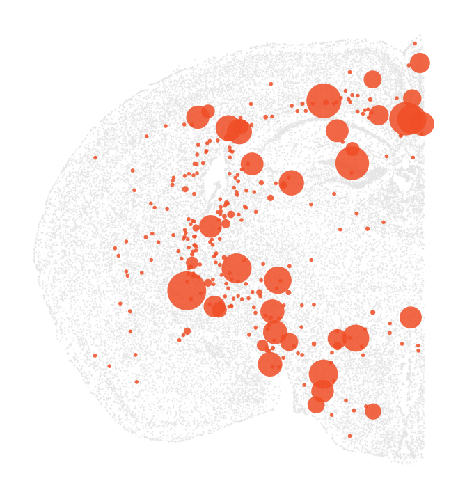
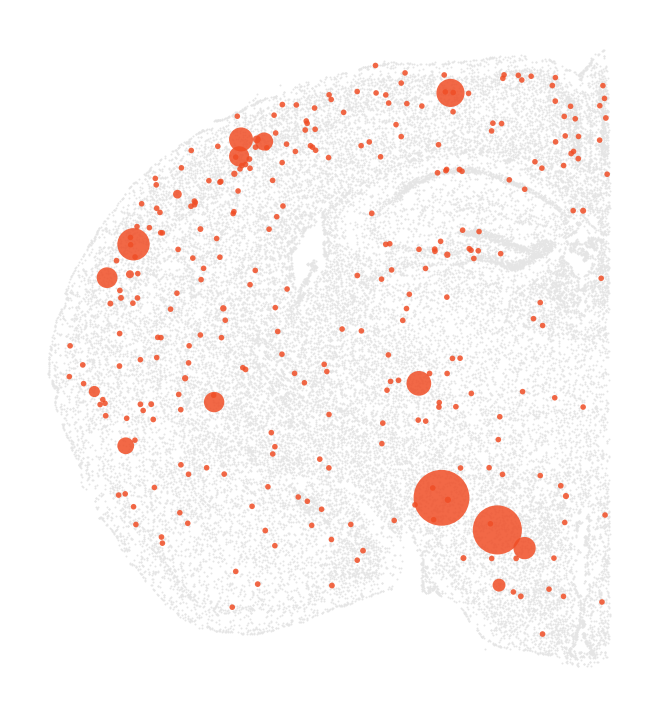

Tangram · the map
Tangram learns where each reference cell belongs
Data
SpaGE
Tangram
cell2location
Compare
The mapping matrix M: one row per reference cell, one column per spatial location. Each entry: probability that this cell sits there.
columns: spatial locations (here: MERFISH cells)
A softmax over each row makes the probabilities positive and sum to 1. In the practical M is 28,981 × 37,068.
One OPC-Oligo cell's row

99% of its probability falls on 300 locations
One IT-ET neuron's row

88% on 300 locations, many outside the cortex
Dot size = probability. A single cell's mapping can be noisy, as for this neuron. Summing many cells (next slides) is far more reliable.
Biancalani et al., Nat Methods 2021 (M, softmax). Rows from ad_map_tangram.h5ad (Practical 5, precomputed); cluster mode: Practical 5 text. Matrix at left: toy.